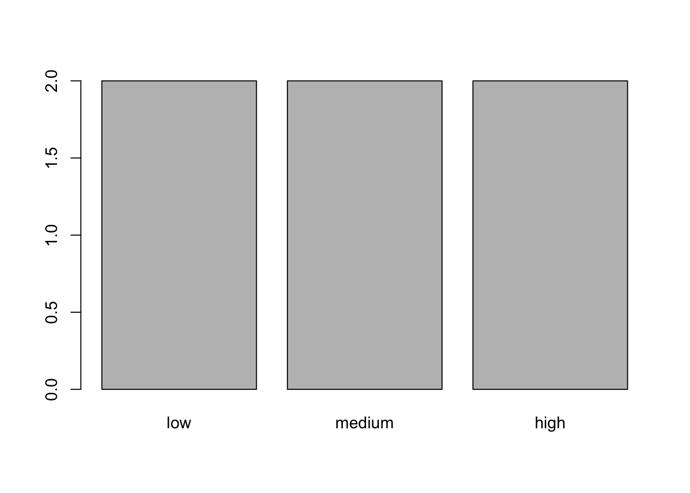
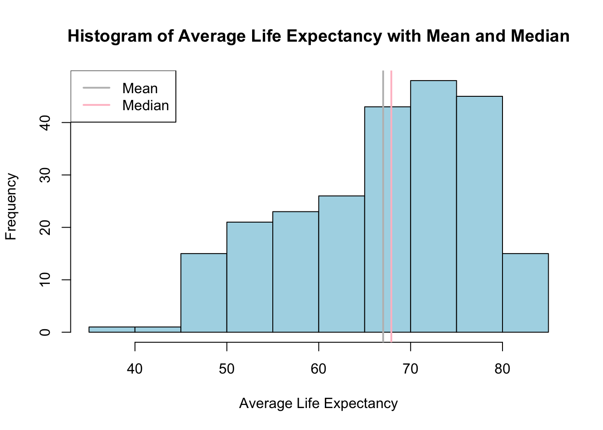
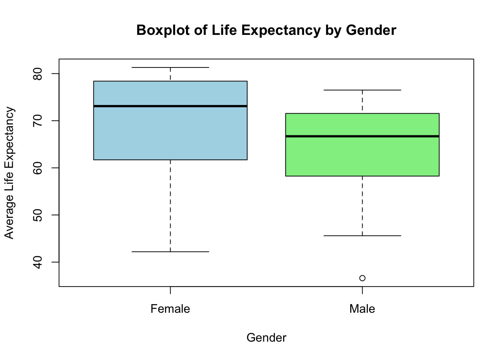
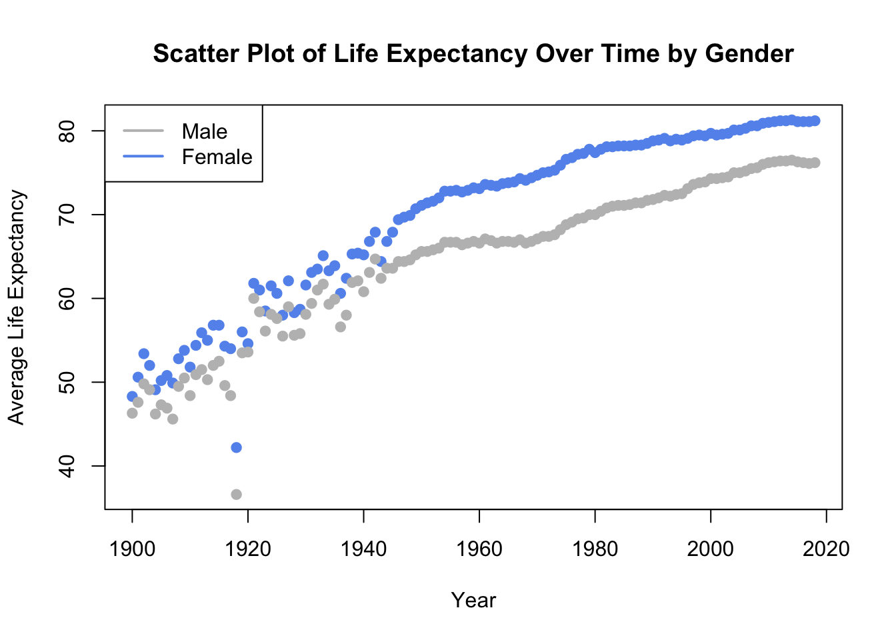
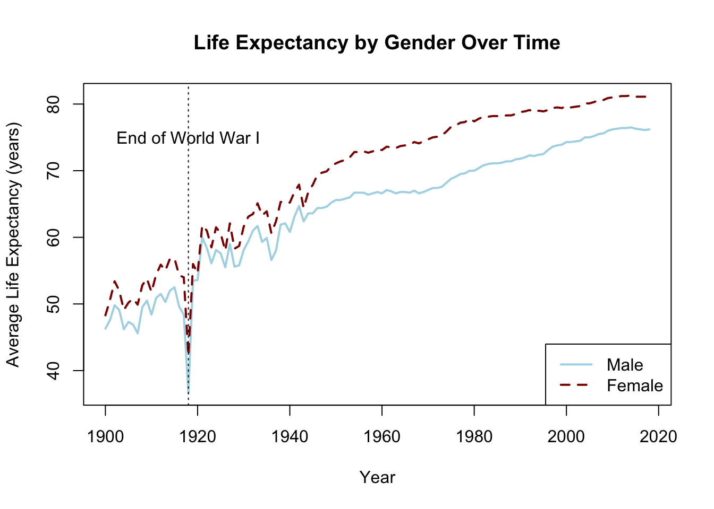
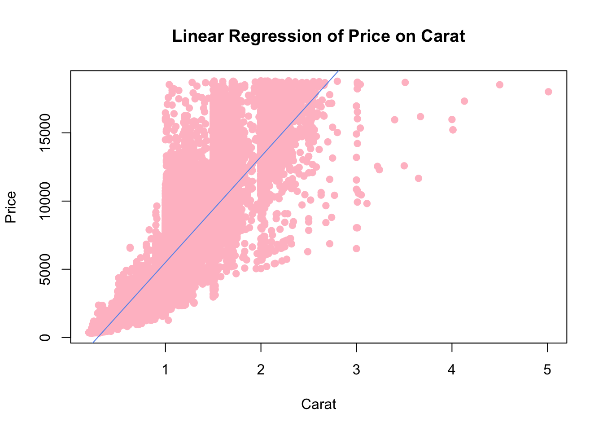

A few lines of code were generated with an LLM. For instance, I had forgotten how to ‘paste’ in R. They were also used to generate names and for help functions.
Getting Started with R and RStudio
Exercise 1
After installation, type R.version. What version of R did you install? What is the nickname of that particular software build?
R.version
_
platform aarch64-apple-darwin20
arch aarch64
os darwin20
system aarch64, darwin20
status
major 4
minor 4.3
year 2025
month 02
day 28
svn rev 87843
language R
version.string R version 4.4.3 (2025-02-28)
nickname Trophy Case
Exercise 2
Open RStudio. In the console pane (usually at the bottom-left), type 1 + 1 and press Enter. What result do you get?
1+1
[1] 2
Exercise 3
Create a new R script (File > New File > R Script). Type print(“Hello, Data Science!”) and run the code. What output do you see in the console?
print("Hello, Data Science!")
[1] "Hello, Data Science!"
Exercise 4
Use pacman to install and load the tidyr package. Then, use p_functions() to list all functions in the tidyr package.
Create a new folder on your computer called “DataScience”. Set this as your working directory in RStudio. Then, use getwd() to confirm it’s set correctly.
Note: This was done, but running this in Quarto is problematic, so this output is copied from the Console.
> getwd()
[1] "/Users/john/DataScience"
Basic R Syntax and Data Types
Exercise 1
Create two variables c and d with values of your choice. Perform all the above operations on these variables and print the results.
c <-11d <-13sum <- c + ddifference <- c - dproduct <- c * dquotient <- c / dpower <- c ^ dmodulus <- c %% dprint(sum)
[1] 24
print(difference)
[1] -2
print(product)
[1] 143
print(quotient)
[1] 0.8461538
print(power)
[1] 3.452271e+13
print(modulus)
[1] 11
Exercise 2
Create variables of each data type we’ve discussed so far (numeric, character, logical). Use the class() function to verify their types.
Create a vector of numbers from 1 to 10. Then, use indexing to:
Extract the 5th element
Extract all elements except the 3rd
Extract the 2nd, 4th, and 6th elements
# Create a vector of numbers from 1 to 10numbers <-1:10# Extract the 5th elementfifth <- numbers[5]# Extract all elements except the 3rdnot_third <- numbers[-3]# Extract the 2nd, 4th, and 6th elementsevens <- numbers[c(2, 4, 6)]# Print resultsprint(numbers)
[1] 1 2 3 4 5 6 7 8 9 10
print(fifth)
[1] 5
print(not_third)
[1] 1 2 4 5 6 7 8 9 10
print(evens)
[1] 2 4 6
Exercise 5
Write a conditional statement that checks if a number is positive, negative, or zero, and prints an appropriate message for each case.
# Define a numbernum <-sample(-10:10, 1) # generate numberprint(num)
[1] -4
# Conditional statement to check if the number is positive, negative, or zeroif (num >0) {print("The number is positive.")} elseif (num <0) {print("The number is negative.")} else {print("The number is zero.")}
[1] "The number is negative."
Exercise 6
Create a vector of 5 numbers and a vector of 5 names. Combine them into a data frame where each number corresponds to an age and each name corresponds to a person. Then, calculate the mean age and display a summary of the data frame.
# Create a vector of 5 agesages <-c(25, 30, 11, 28, 55)# Create a vector of 5 namesnames <-c("Alice", "Bob", "Charlie", "David", "Eve")# Combine into a data framepeople_df <-data.frame(Name = names, Age = ages)# Calculate the mean agemean_age <-mean(people_df$Age)# Display the summary of the data framesummary(people_df)
Name Age
Length:5 Min. :11.0
Class :character 1st Qu.:25.0
Mode :character Median :28.0
Mean :29.8
3rd Qu.:30.0
Max. :55.0
# Print the mean ageprint(paste("The mean age is:", mean_age))
[1] "The mean age is: 29.8"
Exercise 6 - Advanced
Create a custom function that takes a vector of numbers as input and returns a list containing the following: 1. The square of each number in the vector. 2. A count of how many numbers in the vector are greater than a specified threshold. 3. The mean of the numbers in the vector, but only include numbers greater than a specified threshold in the calculation.
Test your function with a vector of random numbers, using a threshold of your choice.
# Define the custom functionvector_out <-function(numbers, target) { squared_num <- numbers^2 target_count <-sum(numbers > target) target_mean <-mean(numbers[numbers > target])# Return a list with resultsreturn(list(Squared_Numbers = squared_num,Count_Above_Target = target_count,Mean_Above_Target = target_mean ))}# Generate a vector of 10 random numbers between 1 and 50set.seed(111) # Set seed for reproducibilityrandom_numbers <-sample(1:100, 10, replace =TRUE)print(random_numbers)
[1] 78 84 83 47 25 59 69 35 72 26
# Define a threshold valuetarget_value <-median(random_numbers)# Call the function with the generated vector and thresholdresult <-vector_out(random_numbers, target_value)# Print the resultsprint(result)
# Ordered factorord_factor <-factor(factor_var, levels =c("low", "medium", "high"), ordered =TRUE)# Create a bar plotbarplot(table(ord_factor))

Exercise 3
Data Frame Operations Objective: Learn how to create, access, and manipulate data frames.
Instructions:
Create a data frame with the following columns: ID (1, 2, 3), Name (“Alice”, “Bob”, “Charlie”), and Score (85, 90, 88).
Access the Name column and print it.
Add a new column Pass that indicates whether the Score is greater than or equal to 90.
Calculate the average Score for all students.
# Create a data framedf <-data.frame(ID =1:3,Name =c("Alice", "Bob", "Charlie"),Score =c(85, 90, 88))# Access the Name columndf$Name
[1] "Alice" "Bob" "Charlie"
# New columndf$Pass <- df$Score >=90print(df)
ID Name Score Pass
1 1 Alice 85 FALSE
2 2 Bob 90 TRUE
3 3 Charlie 88 FALSE
# Calculate the average scoremean(df$Score)
[1] 87.66667
Exercise 4
Text Data Manipulation with stringr Objective: Practice manipulating text data using the stringr package.
Instructions: 1. Load the stringr package. 2. Create a character string: “The quick brown fox jumps over the lazy dog”. 3. Count the number of words in the string. 4. Extract the word “quick” from the string. 5. Replace the word “lazy” with “energetic”.
# Load the stringr packagelibrary(stringr)# Create a stringtext_string <-"The quick brown fox jumps over the lazy dog"# Count wordsstr_count(text_string, "\\w+")
# Replace "lazy" with "crazy"str_replace(text_string, "lazy", "energetic")
[1] "The quick brown fox jumps over the energetic dog"
# Try the following and count again?text_string <-"The quick brown fox jumps over the lazy dog #"str_count(text_string, "\\w+")
[1] 9
Exercise 5
Creating and Analyzing a Document-Term Matrix (DTM) Objective: Learn how to create and analyze a Document-Term Matrix using text data.
Instructions:
Load the tm package.
Create a small corpus using the following text documents:
“R is a programming language for data analysis.”
“Data analysis in R is powerful and flexible.”
“Learning R can be fun and rewarding.”
Create a Document-Term Matrix (DTM) from the corpus.
Inspect the DTM to see the term frequency matrix.
Identify the term with the highest frequency across all documents.
# Load tm packagelibrary(tm)
Loading required package: NLP
# Create a corpusdocuments <-c("R is a programming language for data analysis.","Data analysis in R is powerful and flexible.","Learning R can be fun and rewarding.")corpus <-Corpus(VectorSource(documents))# Create a Document-Term Matrixdtm <-DocumentTermMatrix(corpus)# Inspect the DTMinspect(dtm)
<<DocumentTermMatrix (documents: 3, terms: 13)>>
Non-/sparse entries: 15/24
Sparsity : 62%
Maximal term length: 11
Weighting : term frequency (tf)
Sample :
Terms
Docs analysis analysis. and can data flexible. for language powerful
1 0 1 0 0 1 0 1 1 0
2 1 0 1 0 1 1 0 0 1
3 0 0 1 1 0 0 0 0 0
Terms
Docs programming
1 1
2 0
3 0
result_2 <-is_positive(-3) # Should return "Negative"print(result_2)
[1] "Negative"
result_3 <-is_positive(0) # Should return "Zero"print(result_3)
[1] "Zero"
Session 3: Wrapping Up and Q&A
There were no exercises in this portion.
Session 1: Importing and Exporting Data
There were no exercises in this portion.
2.1 Importing and Exporting Data
Some of the items in this were not dynamically generated in R, but rather were pasted from console output.
Q1
1. Import the Air_Quality data and view the column names.
# 1.1.1 Direct import If the data is in the same folder as the current working directoryair_data <-read.csv("Air_Quality.csv")# 1.1.2 Setting working directory before direct import#setwd('D:/Summer Coding Camp/Jeong_CodingCamp_draft_code/Jeong_CodingCamp_draft_code')#air_data <- read.csv("Air_Quality.csv")# 1.1.3 Reading by giving the absolute address#air_data <- read.csv('D:/Summer Coding Camp/Jeong_CodingCamp_draft_code/Jeong_CodingCamp_draft_code/Air_Quality.csv')
2. Calculate the mean of a numeric column of your choice.
mean_air <-mean(air_data$Year)print(mean_air)
[1] 2014.657
3. Identify the number of unique values in a categorical column.
3. Count the number of missing values in the Electric Vehicle data.
library(readxl)ev_data <-read_excel("Electric_Vehicle_Population_Data.xlsx")num_missing_values <-sum(is.na(ev_data))print(paste("Number of missing values in the entire data frame:", num_missing_values))
[1] "Number of missing values in the entire data frame: 494"
Q3
Export the Electric Vehicle data to a new CSV file.
# A tibble: 194,232 × 17
`VIN (1-10)` County City State Postal_Code Model_Year Make Model
<chr> <chr> <chr> <chr> <chr> <dbl> <chr> <chr>
1 1C4RJXN66R Snohomish Everett WA 98204 2024 JEEP WRAN…
2 KNDJX3AEXG King Renton WA 98058 2016 KIA SOUL
3 5YJ3E1EA3L King Seattle WA 98125 2020 TESLA MODE…
4 1G1RC6S5XH Kitsap Port Orchard WA 98367 2017 CHEVR… VOLT
5 5UXTA6C09P Snohomish Monroe WA 98272 2023 BMW X5
6 1FMCU0EZXN Yakima Moxee WA 98936 2022 FORD ESCA…
7 5YJSA1DNXD Thurston Olympia WA 98506 2013 TESLA MODE…
8 1N4AZ0CP8F Snohomish Monroe WA 98272 2015 NISSAN LEAF
9 WP1AE2A21J Snohomish Everett WA 98208 2018 PORSC… CAYE…
10 1N4BZ1BV4N Snohomish Everett WA 98208 2022 NISSAN LEAF
# ℹ 194,222 more rows
# ℹ 9 more variables: `Electric Vehicle Type` <chr>,
# `Clean Alternative Fuel Vehicle (CAFV) Eligibility` <chr>,
# Electric_Range <dbl>, `Base MSRP` <dbl>, `Legislative District` <dbl>,
# `DOL Vehicle ID` <dbl>, `Vehicle Location` <chr>, `Electric Utility` <chr>,
# `2020 Census Tract` <dbl>
Session 3: Wrapping Up and Q&A
There were no exercises in this portion.
Session 1: Data Visualization with Base R
There are no exercises in this section.
Session 2: Hands-on Exercises
2.1 Creating Visualizations for Age-adjusted Death Rate
1. Create a basic histogram of Age_adjusted_Death_Rate with mean and median lines.
life_data <-read.csv("US_Life_expectancy.csv")# Replotting with mean and medianmean_le <-mean(life_data$Average_Life_Expectancy, na.rm =TRUE)median_le <-median(life_data$Average_Life_Expectancy, na.rm =TRUE)hist(life_data$Average_Life_Expectancy,main ="Histogram of Average Life Expectancy with Mean and Median",xlab ="Average Life Expectancy",col ="lightblue", border ="black")abline(v = mean_le, col ="grey", lwd =2)abline(v = median_le, col ="pink", lwd =2)legend("topleft", legend =c("Mean", "Median"), col =c("grey", "pink"), lwd =2)

2. Create a boxplot of Age_adjusted_Death_Rate by gender with colors.
boxplot(Average_Life_Expectancy ~ Gender, data = life_data,main ="Boxplot of Life Expectancy by Gender",xlab ="Gender", ylab ="Average Life Expectancy",col =c("lightblue", "lightgreen"))

3. Create a scatter plot of Year vs. Age_adjusted_Death_Rate with points colored by gender.
plot(life_data$Year, life_data$Average_Life_Expectancy,xlab ="Year", ylab ="Average Life Expectancy",main ="Scatter Plot of Life Expectancy Over Time by Gender",pch =19, col =ifelse(life_data$Gender =="Male", "grey", "cornflowerblue"))legend("topleft", legend =c("Male", "Female"), col =c("grey", "cornflowerblue"), lwd =2)

4. Create a line plot of Year vs. Age_adjusted_Death_Rate with lines for each gender.
male_data <-subset(life_data, Gender =="Male")female_data <-subset(life_data, Gender =="Female")plot(male_data$Year, male_data$Average_Life_Expectancy,type ="l", col ="lightblue", lwd =2,xlab ="Year", ylab ="Average Life Expectancy (years)",main ="Life Expectancy by Gender Over Time",lty =1,xlim =c(min(life_data$Year), max(life_data$Year)), ylim =c(min(life_data$Average_Life_Expectancy, na.rm =TRUE), max(life_data$Average_Life_Expectancy, na.rm =TRUE)))lines(female_data$Year, female_data$Average_Life_Expectancy, col ="red4", lwd =2, lty =2)legend("bottomright", legend =c("Male", "Female"), col =c("lightblue", "red4"), lwd =2, lty =c(1, 2))text(1918, 75, "End of World War I", col ="black")abline(v =1918, col ="black", lwd =1, lty =3)

Session 3: Wrapping Up and Q&A
There were no exercises in this section.
Introduction to gglplot
There were no exercises in this section.
Session 1: Advanced Data Manipulation with dplyr
1.1 Introduction
There were no exercises in this section.
1.2 Loading the Data
There were no exercises in this section.
1.3 Grouping and Summarizing Data
Group the data by Year, Aggregate by sum the Age_adjusted_Death_Rate
library(dplyr)
Attaching package: 'dplyr'
The following objects are masked from 'package:stats':
filter, lag
The following objects are masked from 'package:base':
intersect, setdiff, setequal, union
Create a new dataset with a column specifying if the year is before or after 1945, and join it ON the original dataset, keeping the original dataset intact and without na values. Hint: which side of join you should use?
additional_data_war <-data.frame(Year =1900:2020,Year_Category =ifelse(1900:2020<1945, "Before WW2", "After WW2"))# Joining data framesjoined_data_ww2 <-left_join(life_data, additional_data_war, by ='Year')# Viewing the joined datahead(joined_data_ww2)
Year Gender Average_Life_Expectancy Age_adjusted_Death_Rate Year_Category
1 1900 Female 48.3 2410.4 Before WW2
2 1901 Female 50.6 2350.5 Before WW2
3 1902 Female 53.4 2162.8 Before WW2
4 1903 Female 52.0 2250.6 Before WW2
5 1904 Female 49.1 2358.8 Before WW2
6 1905 Female 50.2 2287.7 Before WW2
Welch Two Sample t-test
data: price by cut
t = 9.7484, df = 1894.8, p-value < 2.2e-16
alternative hypothesis: true difference in means between group Fair and group Ideal is not equal to 0
95 percent confidence interval:
719.9065 1082.5251
sample estimates:
mean in group Fair mean in group Ideal
4358.758 3457.542
Interpretation:
t = 9.7484, df = 1894.8
The alternative hypothesis is that the difference in means between the “Fair” and “Ideal” groups is not equal to 0. Since the p-value is near zero, we reject the null hypothesis. The means of the two groups are different.
The 95% CI is between 719.9065 and 1082.5251.
The mean for Fair is 4358.758.
The mean for Ideal is 3457.542.
Exercise 3 ANOVA
Q3-1
Perform an ANOVA test to assess the effect of clarity on diamond price.
If significant differences are found, conduct a Tukey’s HSD post-hoc test to identify which clarity levels differ from each other.
summary(aov(price ~ clarity, data = diamonds))
Df Sum Sq Mean Sq F value Pr(>F)
clarity 7 2.331e+10 3.330e+09 215 <2e-16 ***
Residuals 53932 8.352e+11 1.549e+07
---
Signif. codes: 0 '***' 0.001 '**' 0.01 '*' 0.05 '.' 0.1 ' ' 1
Clarity has a significant effect on price.
Q3-2
If significant differences are found, conduct a Tukey’s HSD post-hoc test to identify which clarity levels differ from each other.
Fit a simple linear regression model with carat as the predictor and price as the response variable.
Display the summary of the regression model, including coefficients, R-squared, and p-value.
Create a scatter plot of price versus carat, and add the regression line to visualize the relationship.
diamond_lm <-lm(price ~ carat, data = diamonds)summary(diamond_lm)
Call:
lm(formula = price ~ carat, data = diamonds)
Residuals:
Min 1Q Median 3Q Max
-18585.3 -804.8 -18.9 537.4 12731.7
Coefficients:
Estimate Std. Error t value Pr(>|t|)
(Intercept) -2256.36 13.06 -172.8 <2e-16 ***
carat 7756.43 14.07 551.4 <2e-16 ***
---
Signif. codes: 0 '***' 0.001 '**' 0.01 '*' 0.05 '.' 0.1 ' ' 1
Residual standard error: 1549 on 53938 degrees of freedom
Multiple R-squared: 0.8493, Adjusted R-squared: 0.8493
F-statistic: 3.041e+05 on 1 and 53938 DF, p-value: < 2.2e-16
# Create a scatter plot and add the regression lineplot(diamonds$carat, diamonds$price, main ="Linear Regression of Price on Carat",xlab ="Carat", ylab ="Price",pch =19, col ="pink")abline(diamond_lm, col ="cornflowerblue")

Session 3: Wrapping Up and Q&A
There are no questions in this section.
Session 1: Multiple Linear Regression
There are no questions in this section
Session 2: Hands-on Exercises
Exercise 1: Fitting a Multiple Linear Regression Model
Q1-1
Use the lm() function to create a multiple linear regression model with your selected variables.
library(MASS)
Attaching package: 'MASS'
The following object is masked from 'package:dplyr':
select